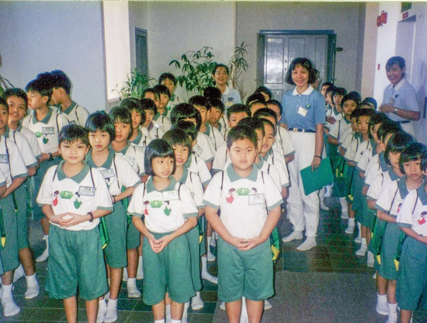
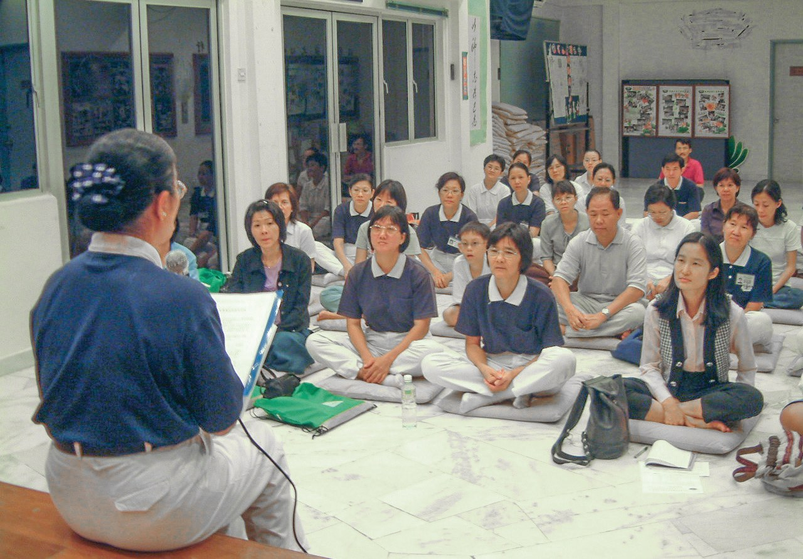
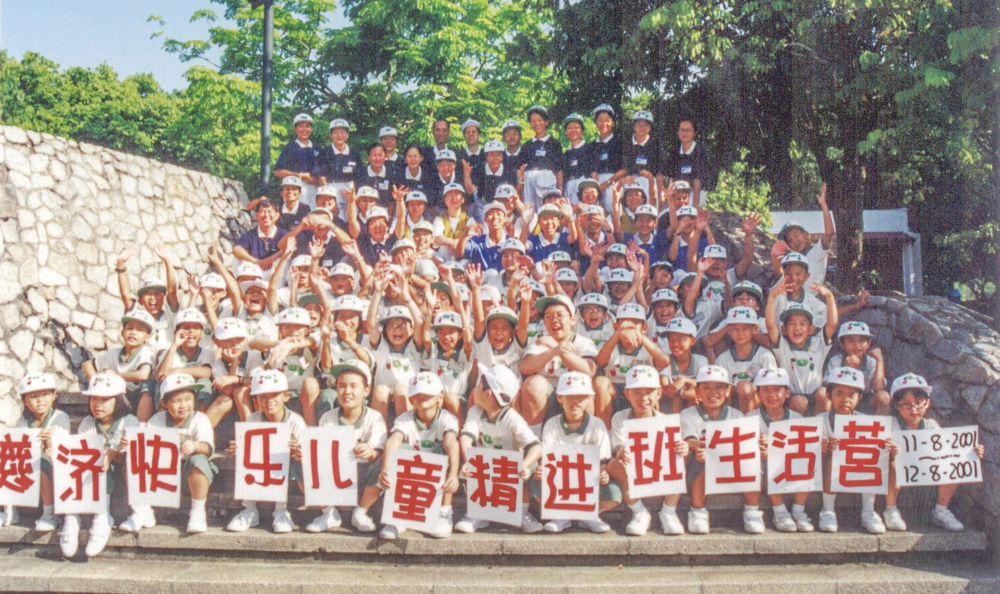
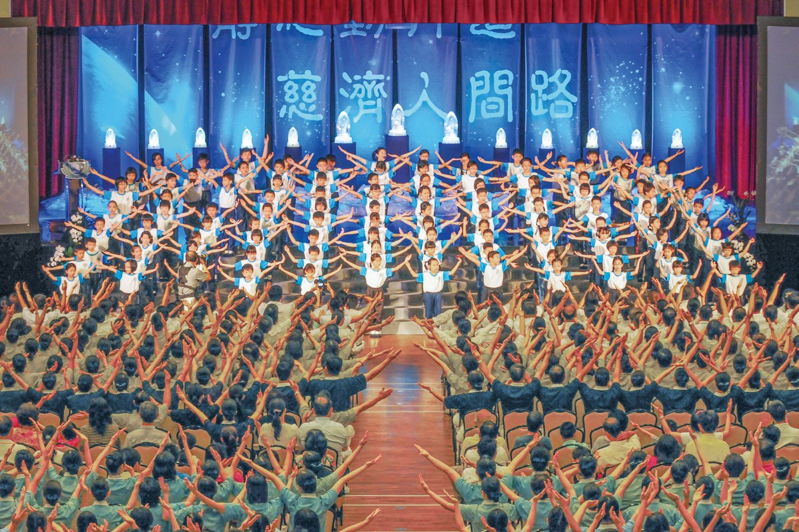
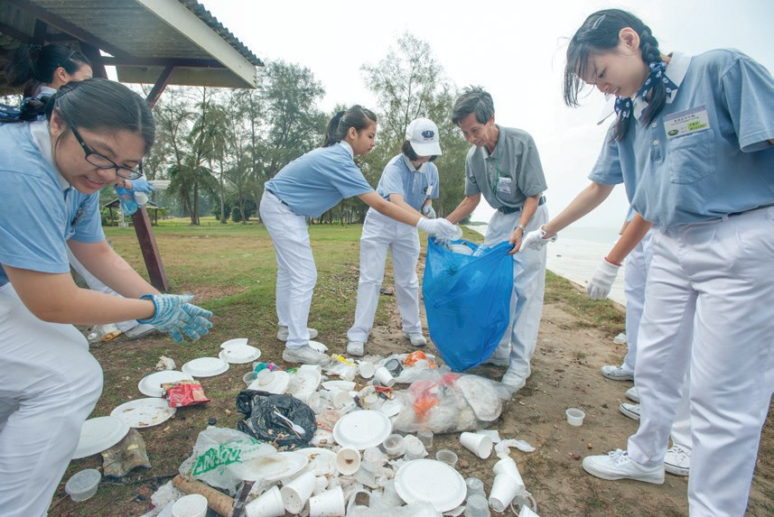
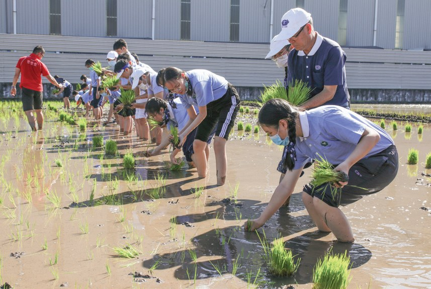
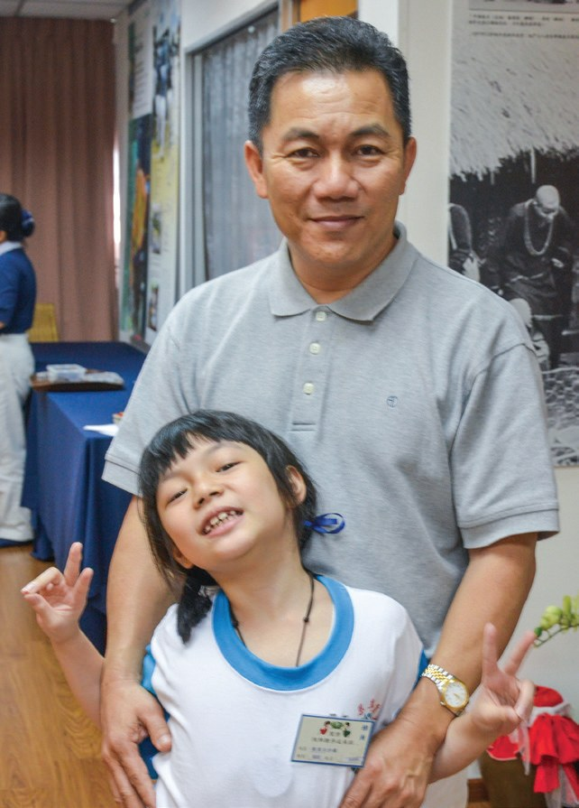
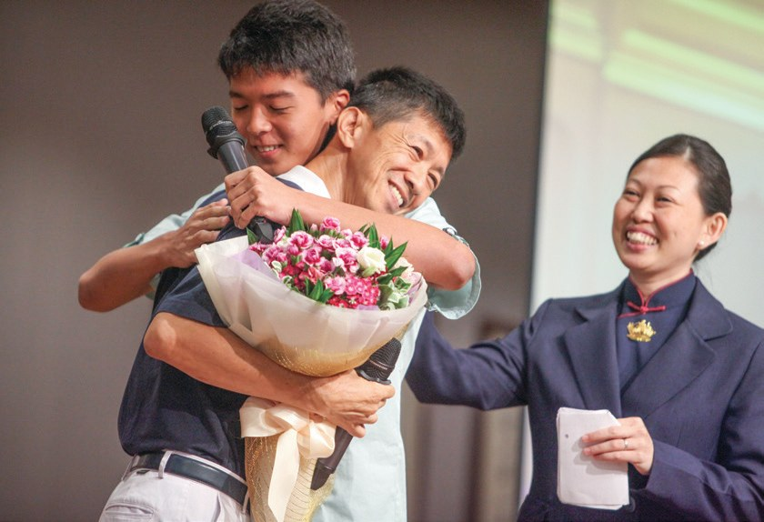
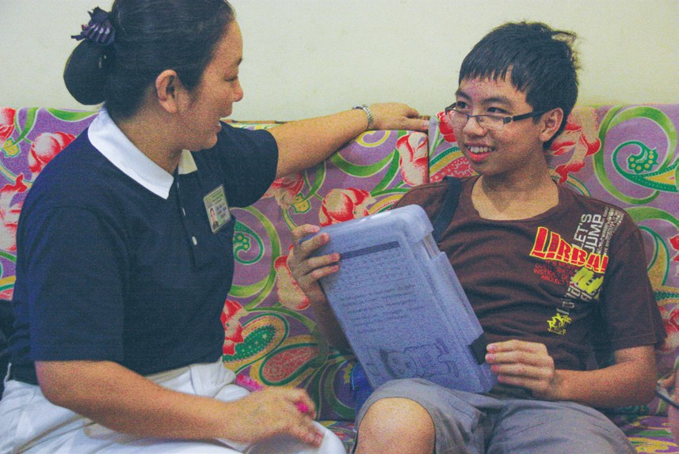

勤耕心田護種子
要改變孩子，要先改變誰？

先別急著下結論，讀完再說說你的想法～
這一篇講兒童班、親子班和慈少班。父母忙著上班，慈濟就陪孩子學靜思語；後來發現，父母也要一起來上課。
你會讀到拿藤鞭的爸爸媽媽怎樣改變，還有一個把全部積蓄捐出來蓋靜思堂的孩子。
下面是原書的節錄，紅色底線是我們替你標出的轉折點。
讀之前：你覺得孩子不聽話，最常是因為什麼？
父母都在上班
小家庭忙，誰陪孩子學做人？閱讀引導
吉隆坡，雙薪小家庭佔比很高，父母忙於工作，將年紀小的孩童寄放在托兒所、安親班，或是請長輩、女傭照顧孩子的比例很高

孩子誰來陪？
同年11月16日，雪隆兒童班正式成立。

期望孩子們能將「口說好話、心想好意、身行好事」，潛移默化地落實在生活中。

錄取條件以學童家長能承擔兒童班工作人員（即班爸爸、班媽媽）為優先，共招收新生92人。
爸爸媽媽也要來！
媽媽向兒子道歉
兒童班變成親子班，父母和孩子一起學。閱讀引導
一方面希望能強化親子教育、增進親子關係，另一方面也希望能讓父母瞭解慈濟精神
2008年，雪隆教育團隊正式將親子班落實在社區，共開辦六個班級，兒童班正式走入歷史。

親子班媽媽劉美君表示，以前她總是拿藤鞭打罵孩子，認為這是在教育孩子，但在親子班接觸靜思語後，才體悟到打罵的教育方式其實是在傷害孩子。
原來是傷害……
因此鼓起勇氣向兒子認錯道歉，卻換來冷漠的回應。
但她持續努力，時常以靜思語提醒自己，也每天用愛與關懷稱讚兒子，在努力兩年半後，終於改善了親子關係。

兩年半才等到回應。
「我一直都堅信要種善的種子，雖然不一定明天就會發芽，但有一天因緣成熟時，就一定會萌芽。」
媽媽馬麗華說・p.423- 逾1,100人歷年學員p.423
- 8,705對親子參與p.423
慈少走出去
小學畢業了，靜思語還要繼續學。閱讀引導
2000年3月，雪隆慈少班正式成立，共63位學員參與，也邀請家長一同出席。

慈少前往新古毛殘智障院當小志工時，初見病童扭曲身體躺在床上，雖然有些膽怯
「關懷，不只是口說的表達，還有臉上的笑容及肢體的互動。」
慈少們分享・p.425後來會笑著陪病童。


2013年正式規劃將慈少班與慈青銜接；7月首次安排剛畢業的慈少與慈青相見歡，鼓勵即將上大學的慈少加入慈青行列，持續接棒。

接著當慈青。
猜一猜閱讀引導
截至2022年，雪隆慈少班的學員人數大約有多少？
放下藤鞭
兩位爸爸，先改變了自己。閱讀引導
慈少班班爸爸黃鏡維，過去奉行藤鞭教育，使孩子不敢接近他，事情都透過媽媽傳達。
才發現那並不是單純的紀律課程，而是希望父母跟孩子一同成長。

「要改變孩子，先要改變自己。對個性不同的孩子，要因材施教，放下身段用心溝通。」
黃鏡維說・p.429是爸爸先改！
曾因孩子黃佳律沉迷電玩、逃學輟學，管教、責罵都無效，而陷入無助與焦慮。
於是，黃時常放下責備，不但不限制孩子去網咖，還替孩子送飯，後來更直接買高效能的電腦讓孩子在家裡就可以玩電玩。
還買電腦給他？
後來黃佳律慢慢擺脫了對電玩的依賴，開始反思人生，決定重回校園唸書。

「這是我生平第一個獎牌，還好來得及在分享會結束前送給爸爸。」
黃佳律說・p.430送給爸爸。
兩根屋梁
一個節儉的孩子，一個曾經迷途的孩子。閱讀引導
慈少鄭慶源平常節儉惜物，圍巾破了捨不得更換
於是決定捐出所有積蓄八千三百馬幣，圓滿靜思堂的兩根屋梁。
「……我長大以後還可以賺很多錢，但靜思堂不能等，我希望能快快建起來，讓更多人認識慈濟，吸引更多人來做好事。」
鄭慶源說・p.431
卻捐出全部積蓄！

慈少楊慧瑩，曾經是個迷惘不懂事的孩子，抽菸、喝酒、逃學、吸毒樣樣來
「家訪時，第一次看到那麼貧窮的家庭，當下就決定要把零用錢儲蓄起來，幫助他們。」
楊慧瑩表示・p.432她因此而改變，決心要做一個乖孩子。
「我很感動，看到慧瑩的改變，太開心了。」
楊慧瑩的奶奶表示・p.432
放心了。
他們在慈濟大家庭裡接受愛的灌溉，就像是一顆顆種子，慢慢地發芽、茁壯
上人開示・p.433停一停：誰讓你記住了？閱讀引導
選一位你印象最深的人。沒有標準答案。
有人向兒子道歉，有人放下責備，有人捐出所有積蓄。哪一位讓你最有感覺？

一起回頭看看吧～
回望
依本章原文整理，每一條都標了原書頁碼。閱讀引導
背後原因
為什麼要辦親子班

小川只教孩子不夠嗎？
- 父母忙碌
雙薪小家庭佔比很高，父母忙於工作。p.419
- 兒童班
培養孩子們真善美的人生觀，進而增進親子互動。p.419
- 一起成長
希望父母跟孩子一同成長。p.428
後續發展
從兒童班到慈少

小禾一顆種子要多少年才發芽？
- 1997.11.16
雪隆兒童班正式成立。p.419
- 2000.3
雪隆慈少班正式成立，63位學員。p.423
- 2006.2.12
雪隆慈濟親子班成立。p.421
- 2008
親子班走入社區，兒童班走入歷史。p.421
- 2010
鄭慶源捐出積蓄護持靜思堂。p.430–431
- 2013
慈少班與慈青銜接。p.427
父母的轉變
以前和後來
小川父母上課之後，有什麼不同？
- 拿藤鞭打罵孩子每天用愛與關懷稱讚兒子p.422
- 過於要求孩子的成績母女關係拉近了p.422
- 孩子不敢接近他孩子不再畏懼父親p.428
- 管教、責罵都無效放下責備p.429
以上只整理本章寫到的事；書裡沒寫到的，我們不替它下結論。
回頭看讀前的選擇閱讀引導
劉美君以前總是拿藤鞭打罵孩子（p.422）；黃鏡維的孩子事情都透過媽媽傳達（p.428）；黃時常說要改變孩子，必須自己先改變（p.429）。孩子、大人、彼此，答案常常在大人那邊。
兒子怎麼反而不沉迷了？
只有你自己看得到喔！
準備好了就一起出發～